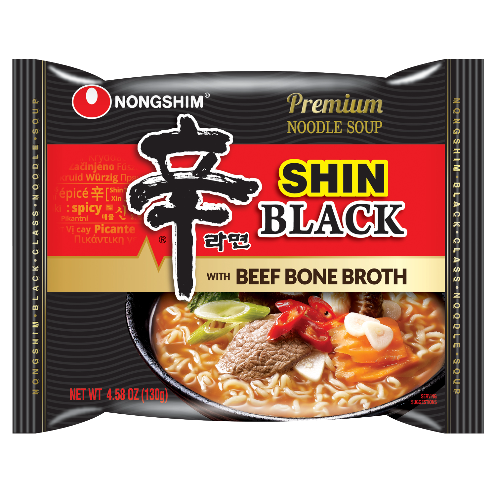
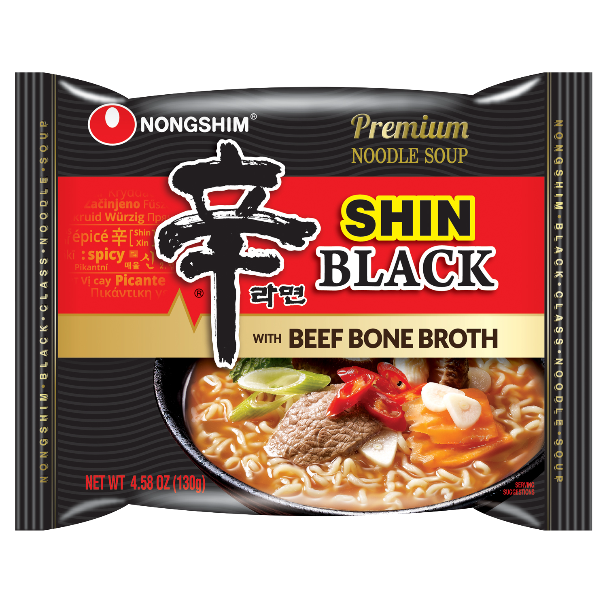

Stir Fry Neoguri
Weight: 110g
Year of Release: 2017
Rating: 2.3/5
Notable flavors: mussels, fish cakes, kelp, carrots, soy protein
This was a unique product that I'm a little on the fence on in terms of taste. My sister recommended this to me because of her love for stir-fry anything, and assumed that I would like it too. Unfortunately, as much as I tried to like it, the taste didn't sit right with me. I prefer the original neoguri or Shin Black, Light, or the OG. Highly recommended if you are like my sister and love stir-fried things.


 
